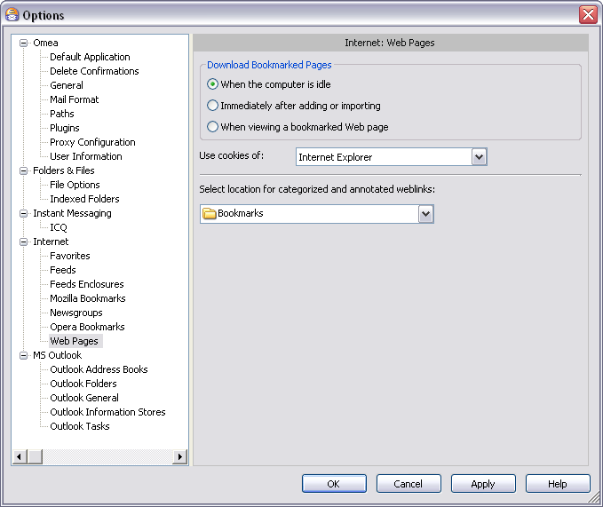
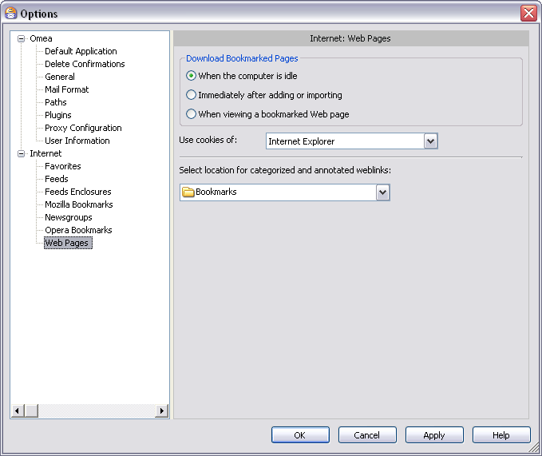

Web Pages
You can access this option from the Main menu: Tools | Options: Internet: Web Pages
This page provides options that control how Omea handles Web pages that you bookmark and view in Omea.
 Web Pages options in the Options dialog
Download Bookmarked Web Pages
This group has several options that control when Omea Reader Omea Pro downloads Web pages that you have bookmarked.
When the Computer is Idle
When selected, the program checks for new bookmarked pages and changes to previously bookmarked Web pages and downloads the new and/or changed pages.
Immediately After Adding or Importing
When selected, bookmarked Web pages are downloaded immediately regardless of whether the computer is idle or not. If there is a large amount of content, your computer might slow down momentarily.
When Viewing a Bookmarked Web Page
When selected, bookmarked Web pages are not downloaded until you view them in Omea ReaderOmea Pro. Pages are downloaded every time you view them.
Use Cookies of…
Select one option from the drop-down list to tell Omea which Internet browser cookies you want it to use.
Cookies is a collection of information (usually including a username and the current date and time, stored on the local computer) used to identify users who have previously registered or visited the site.
The options available in the drop-down list derive from the web browsers you use (each web browser has its own cookies settings) and user profiles which you have in your browsers. You can also tell Omea not to use any cookies (select None from the drop-down list).
Select Location for Categorized and Annotated Weblinks
Use the drop-down box to select the default location where you want your bookmarks (imported or those which you create using Omea and its browser plugins) to be stored.
The drop-down list contains the list of bookmark folders which contain the bookmarks imported from IE© and Mozilla Firefox© which you specified when you came through the Startup Wizard or created in Omea.
For more information on how to work with bookmarks using Omea plugins, see Working with Omea Connector Plugin and Working with Internet Explorer Add-on.
Help
A jumper to this dialog features description in Omea ReaderOmea Pro Help.